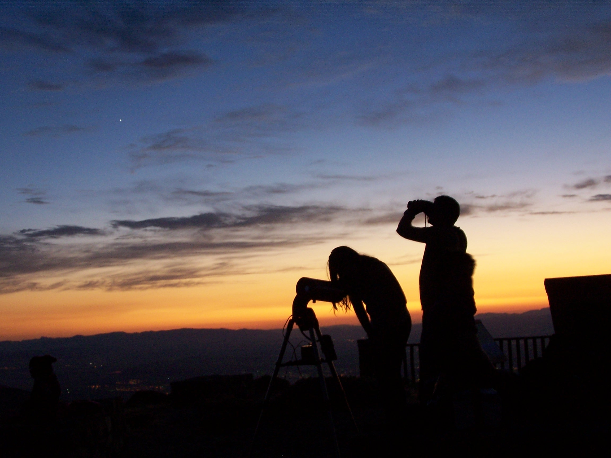

Nos trasladamos a su centro educativo, o a cualquier otro lugar donde existan personas con interés por aprender
Nuestro planetario itinerante, móvil y portátil recorre Andalucía acercando el universo a centros educativos, ayuntamientos, ferias, asociaciones y eventos culturales. Creamos experiencias astronómicas inmersivas que inspiran, educan y despiertan la curiosidad por el cosmos.
Llevamos el universo a tu centro, evento o municipio
Instalamos nuestro planetario portátil en cualquier espacio interior. Es una cúpula inflable, semiesférica y digital, equipada con proyector de lente ojo de pez que proyecta en 360º. Reproduce el cielo nocturno con gran realismo, mapas estelares y contenidos astronómicos adaptados a todas las edades.
Actividades del Planetario Albireo
Ofrecemos una programación variada para aprender disfrutando, tanto dentro del planetario como bajo el cielo real.
Observación de estrellas
Sesiones nocturnas al aire libre con telescopios y prismáticos. Identificamos constelaciones, planetas y objetos del cielo profundo. Perfecto para eventos rurales, fines de semana científicos y propuestas de turismo astronómico.
Caminando bajo las estrellas
Propuesta de astroturismo que combina senderismo suave con la observación del cielo nocturno. Disfruta de una experiencia guiada bajo las estrellas, con explicaciones astronómicas y paradas para contemplar constelaciones y planetas.
Talleres educativos y charlas astronómicas
Actividades didácticas personalizadas según niveles y edades. Incluyen juegos, maquetas, dinámicas participativas y charlas impartidas por divulgadores especializados.
¿A quién va dirigido nuestro planetario?
A centros educativos (desde Infantil hasta Bachiller), ayuntamientos, casas de la cultura, campamentos, asociaciones de mayores, colectivos familiares, comunidades y grupos con necesidades específicas. Adaptamos cada sesión según el público.
Una experiencia inmersiva, accesible y educativa
El planetario digital permite vivir un viaje visual por el espacio. Las sesiones duran unos 45 minutos, son en grupos de 35-45 personas y están guiadas por un educador especializado. También se realizan pases adaptados para personas mayores o con diversidad funcional.
Preguntas frecuentes sobre nuestro planetario itinerante
▶ ¿En qué espacios se puede instalar el planetario?
El planetario necesita un espacio cubierto, plano y libre de obstáculos con unas dimensiones mínimas de 6 metros de diámetro por 3 metros de altura. Salas de usos múltiples, gimnasios o salones de actos son ideales.
▶ ¿Qué edades pueden participar en las sesiones?
Las actividades están adaptadas para todas las edades, desde Infantil hasta adultos. Disponemos de contenidos específicos para cada nivel educativo.
▶ ¿Cómo se estructura una sesión dentro del planetario?
Cada grupo accede al planetario y participa en una proyección inmersiva guiada por un educador. Las sesiones tienen una duración aproximada de 45 minutos.
▶ ¿Se puede realizar la actividad en exteriores?
Sí, ofrecemos actividades al aire libre como observación de estrellas y rutas nocturnas ("Paseando por las estrellas"), aunque el planetario necesita un espacio interior para su instalación.
▶ ¿El planetario es accesible?
Sí, el acceso está adaptado para personas con movilidad reducida. También podemos ofrecer versiones especiales de las sesiones para personas mayores o con necesidades específicas.
▶ ¿Es necesario algún tipo de instalación técnica o eléctrica?
Solo necesitamos una toma de corriente estándar. Nosotros llevamos todo el material técnico necesario, incluyendo el proyector, la cúpula y los equipos de sonido.
▶ ¿Cuánto tiempo necesita el equipo para montar y desmontar el planetario?
El montaje completo se realiza en unos 30 minutos y el desmontaje en unos 20. Nos adaptamos a los horarios del centro o entidad organizadora.
